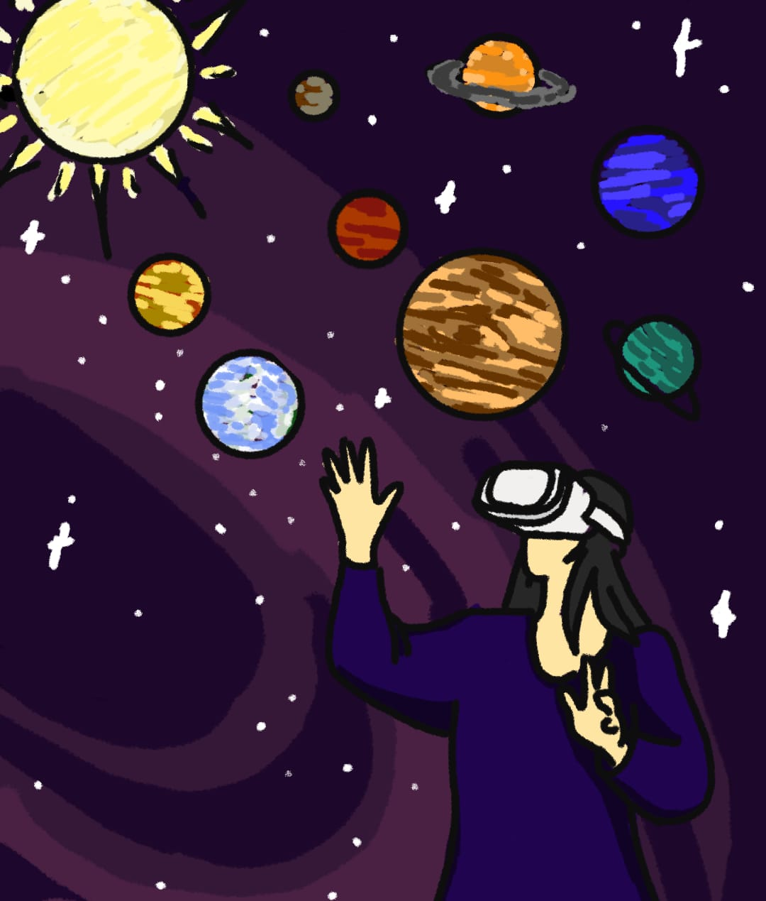

💼 Mes projets

🪐 SOLAS – Explorer le système solaire en VR
Jeu éducatif en réalité virtuelle développé sur Unity. Une expérience immersive pour apprendre les caractéristiques des planètes du système solaire.
Voir sur GitHub
📱 SchemaFlash – Fiches interactives d’apprentissage
Application Android développée en Kotlin avec Jetpack Compose. Maquettes Low-Fi & Hi-Fi réalisées sur Figma.
Voir sur GitHub
🧠 Jeu de Memory
Petit jeu réalisé en HTML, CSS et JavaScript (avec un Dockerfile). Retrouver toutes les paires avec le moins de coups possible.
Voir sur GitHub